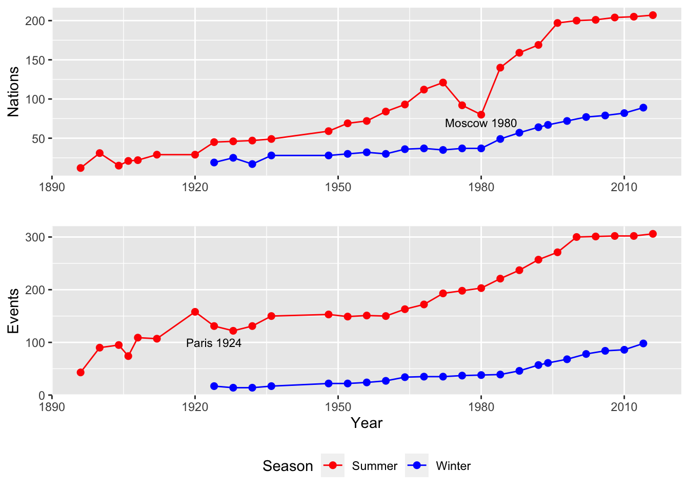
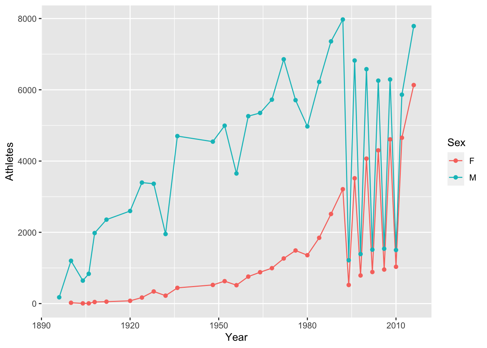
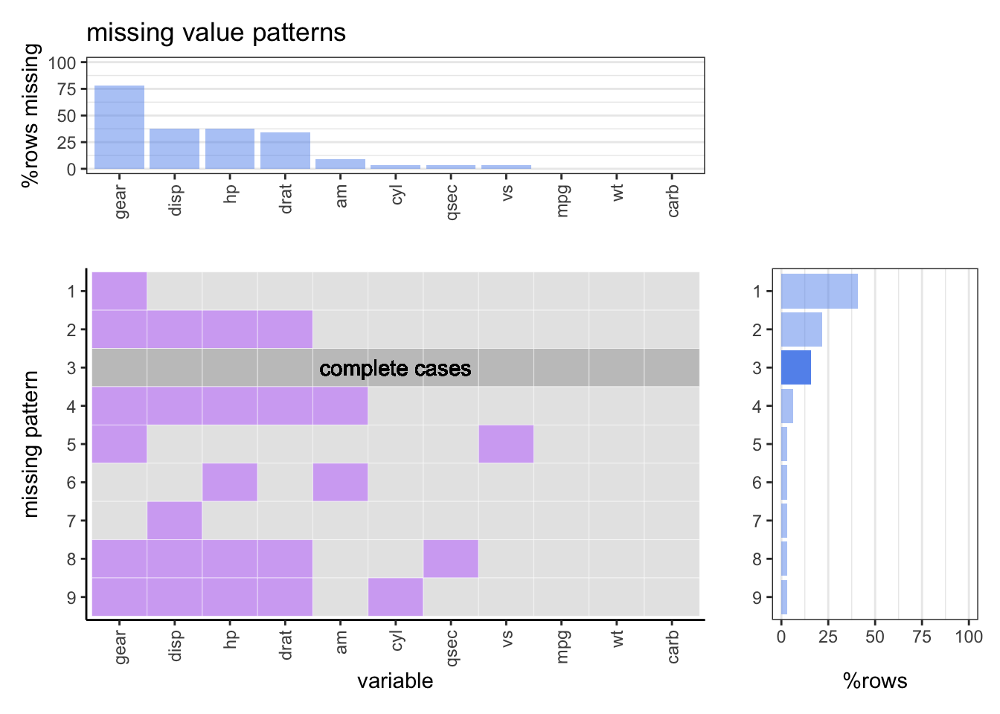
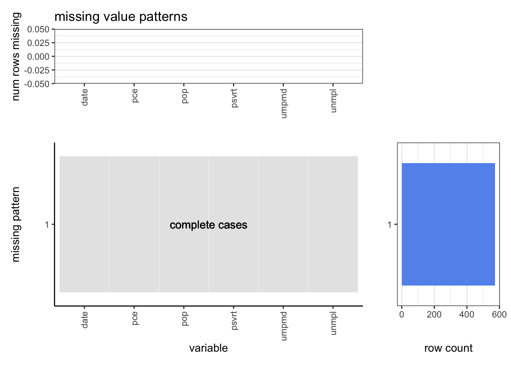
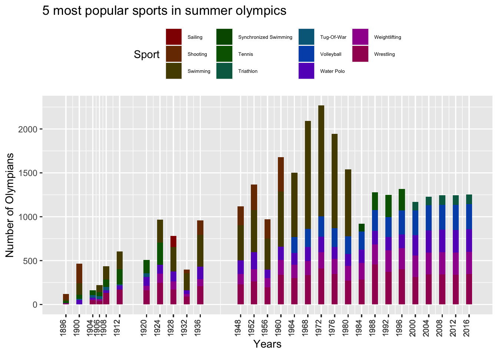
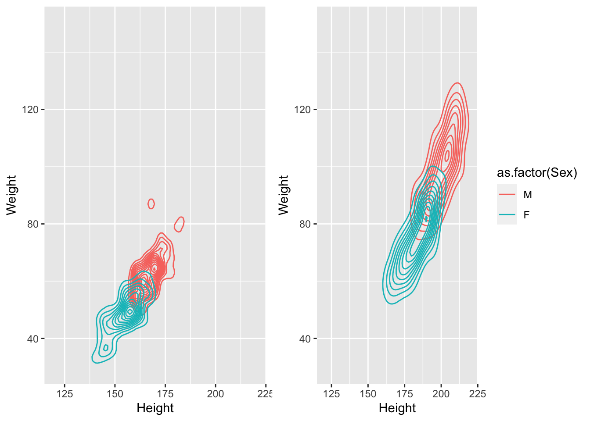

Chapter 5 Results
5.1 Number of Olympians in Summer and Winter Olympics from 1896 to 2016
The above graph shows the participation of athletes from 1896 to 2016.
Key Observations:-
- Modern Olympics were first organized in Athens with all-male participants from 12 countries. Winter Olympics were introduced in 1924.
- After 1992, the Winter and Summer Games were held in different years. Winter Games occurred every four years starting from 1994, and Summer Games occurred every four years beginning in 1996.
- We can also observe that no Olympics were organized between 1912 to 1920 and 1936 to 1948 because of World War I and World War II.
- During the Olympics at Los Angeles in 1932, the participation dipped because the Olympics were held during the great depression.
- During the 1976 Olympics at Montreal, there was a dip in attendance because 25 nations decided to boycott the Olympics in retaliation for apartheid policies in South Africa.
- During Olympics at Moscow in 1980, the number of Olympics who participated decreased because 66 nations decided to boycott the Olympics.
- Winter Olympics have much less participation than summer Olympics because ice and snow sports are not practical or popular in most nations due to climate conditions. This doesn’t appear to change anytime soon.
- 2016 Summer Olympics was held in Rio, and it had maximum participation.
5.2 Number of Events and Nations in Summer and Winter Olympics

Observations-
The 1924 Olympic games were held in Paris, France. Some sports were dropped like archery, field hockey and tug-of-war. Figure skating and ice hockey were moved to the Winter Olympics program and no new sports were added.
The proportion of nations participating in the winter Olympics is very less compared to summer Olympics because a lot of nations don’t have the necessary climate conditions to train and participate in the winter Olympics.
During Olympics at Moscow in 1980, the number nations dropped significantly because 66 nations including united nations of america decided to boycott the Olympics in protest to Russian policies.
After 2000 the number of nations that are participating in summer and winter Olympics are almost constant around 200.
From 1920 to 2000, there is increase in number of events every Olympics and after 2000 the number of events have saturated for summer Olympics but there is still some scope of growth for winter Olympics around 300.
5.3 Distribution of Age of participants and Medalists


5.3.1 Distribution of Age of Medal winner in Summer Olympics

5.3.2 Distribution of Age of Medal winner in Winter Olympics

Key Observations:- The above plot is a boxplot of participants’ age from the Olympics in 1896 to 2016.
- the median age of male participants from 1896 to 2016 is between 23-26. And the median age remains almost constant.
- The Youngest Olympian of all time was Dimitrios Loundras of Greece, who at age 10 in 1896 won a bronze medal in gymnastics, which can be seen as an outlier in the year 1896.
- The oldest Olympian medalist of all time was a Swedish shooter Oscar Swahn, who was 72 years, 280 days old when he won a silver medal in the 1920 Olympics.
- Female Olympians were allowed after 1920, so there is no data for 1896. The median age of female Olympians first increases, then it stabilizes.
- Also, the spread of female participants is less than that of the male participants.
5.4 Female Participation in Olympics
Plot:
The plot shows the total number of female and male athletes participating in winter and summer Olympics over the years.
Observations:
As we can see from the above plot that the number of female athletes grew with similar pace as the number of male athletes over the years untill year 1996. After the year 1996, the male participation became stagnant with total count as ~8000, while the total count for female athletes was still increasing till the recent Olympic 2016.
5.5 Art Competitions in Olympics

Observations,
- About 50 nations participated in the Art Competitions, and about one third won a medal. But over one third of all medals were awarded to artist from only 3 countries, Germany, France and Italy.
- Germany has won maximum number of medals from 1912 to 1948, but they were not invited in 3/7 Olympics as they were banned for 1920, 1924 and 1924.
- Despite all the ban Germany won a lot of medals in 1936 Olympics that were held at Berlin.
5.6 Most popular sports in Olympics
5.6.1 Summer Olympics

5.6.2 Winter Olympics

Observations: 1) From 1948 to 1980 swimming was one of the the most popular sports in summer Olympics but after that it is not one of the 5 most popular sports.
Wrestling is one of the most popular sports in summer Olympics.
After 1984 all the top 5 popular sports have remained the same and the number of participants are almost same.
Ice hockey was popular till 1988 and after that it’s popularity dropped also after 1998 snowboarding’s popularity increased a lot and it has become one of the top 5 popular sport.
In winter Olympics speed skating has been the most popular sport for all the years.
5.7 Distribution of Height and Weight of Olympians

Observations Initially we considered the plots from 1896 but since female participants were very less till 1912 and then there was first world war so we have decided to consider athletes from 1924 as were have sufficient data from that year onwards.
It is clearly evident from the above plot that Male athletes are taller and heavier than female athletes in all Olympics from 1896 to 2016.

In this plot we have compared the average weight and average height for athletes in 2016 Olympics in Gymnastics and Basketball. Also, Athletes who play Basketball are taller and heavier than who do Gymnastics.
17-year-old Brazilian gymnast Flavia Saraiva, is the lightest athletes at only 31kg (68 lbs) and she was also the shortest. Also, Basketball players are very tall and heavy.
5.8 Distribution of Average Height and Weight of Olymipans accross sports

Observations This plot is the distribution of different sports based on the average height and average weight for the athletes from 1896 to 2016. We can see that athletes playing sports like Tug of War, Basketball, Baseball, and Bobsleigh are some of the tallest and heaviest athletes. On the other end, athletes who do Gymnastics, Synchronized Swimming, Diving, Rhythmic Gymnastics are very light and short. And most of the sports lie in between the extreme ends like football, boxing, fencing.